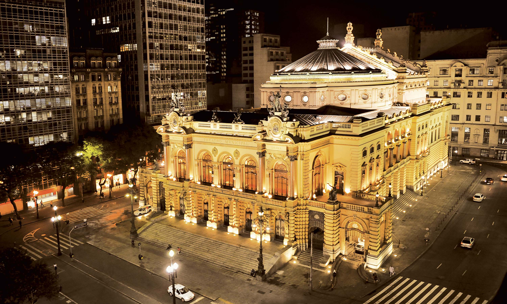

O Teatro Municipal de São Paulo é um dos mais importantes teatros do Brasil e um dos cartões postais da cidade de São Paulo. Localizado no centro da cidade, foi inaugurado em 1911 para atender ao desejo da elite paulista da época, que queria que a cidade estivesse à altura dos grandes centros culturais

Teatro Municipal de noite.
Seu horário de funcionamento é das 10h00 às 16h00 de segunda-feira aos domingos.
Os valores da entrada variam de R$ 30,60 (Setor 3 – lugares no 3°, 4° e 5° andar) a R$ R$ 652,80 (camarote). Lugares na plateia custam R$ 102 ou R$ 136, a depender da série.
Vila Madalena (originalmente Vila dos Farrapos) é um bairro nobre da cidade de São Paulo situado no distrito de Pinheiros, na região oeste. Lá há grande concentração de bares e casas noturnas, além da escola de samba Pérola Negra.
Nossa recomendação para ir quando estiver lá são:
O beco do batman
O Beco do Batman é referência para o graffiti paulistano há mais de 30 anos. Se trata de um beco completamente grafitado onde reza a lenda que nos anos 80 um desenho do Batman apareceu da noite para o dia em uma das paredes do beco. Dando assim a origem de seu nome.
Graffites do beco do batman de dia
A entrada para admirar seus grafites é gratuita.
Casa 92
Local simples e exótico com decoração retrô singular onde os DJs animam a todos na pista de dança.
Comodo da casa 92
Seu horário de funcionamento é das 22h30 às 05h00 de quinta-feira aos sábados.
Entrada (R$ 180.00), comanda individual, Estacionamento/Valet (R$ 25.00), Acesso para deficientes, Lugares/Capacidade total (380) R$ 90,00 (entrada); R$ 180,00 (consumação), com nome na lista: R$ 60,00 (entrada); R$ 120,00 (consumação).
O Bixiga é entendido como um dos mais tradicionais bairros da cidade de São Paulo. Formado por imigrantes italianos, ganhou importância histórica e turística na capital paulista. A tradição e a religiosidade italianas, que são fortemente mantidas e as inúmeras cantinas existentes no bairro são grandes atrativos turísticos. No bairro situa-se a sede da escola de samba Vai-Vai, que até hoje realiza ensaios pelas ruas do bairro.
Nossa recomendação para ir quando estiver lá são:
Al Janiah
Gastrobar acolhedor de menu mediterrâneo-libanês promove apresentações de música étnica e danças palestinas.
Entrada do Al Janiah
Seu horário de funcionamento é das 18h00 às 00h30 de terça-feira as quinta-feira, das 18h00 às 02h00 de quinta-feira aos sábados e das 18h00 às 00h00 aos domingos
O preço de suas comidas e bebidas pode variar entre R$ 22,00 até R$ 43,45
O Jockey Club de São Paulo é a entidade que administra e detém a propriedade do Hipódromo de Cidade Jardim. Foi fundado em 14 de março de 1875, sob o nome de "Club de Corridas Paulistano".
Jockey Club de São Paulo a noite
Seu horário de funcionamento é das 08h00 às 17h00 de segunda-feira aos domingos.
A entrada é gratuita e, com apenas 2 reais no bolso, pode-se apostar em algum dos 1.400 animais que formam o hipódromo (se for maior de idade claro)
Situada na praça da qual empresta o nome, a feirinha, que funciona aos sábados, é uma mistura de brechó e antiquário, onde são encontrados brinquedos antigos, móveis restaurados, discos raros, entre outros itens.
amostra de uma das barracas da feira do Benedito Calixto
A feira fica abre aos sábados, das 14h30 às 18h30. A entrada é gratuita.
Autódromo
Autódromo José Carlos Pace é um autódromo municipal localizado no distrito de Cidade Dutra, na cidade de São Paulo, Brasil. Pela proximidade com o bairro de Interlagos é popularmente chamado de Autódromo de Interlagos, é um dos maiores espaços públicos da cidade, com mais de um milhão de metros quadrados. O local recebe diversas provas de automobilismo durante o ano todo, como a Fórmula 1 e o Mundial de Endurance (FIA-WEC).
Visão aérea do Autódromo de interlagos
Horário de funcionamento do Autódromo Administração - Diariamente, 7h às 19h. Pista para treino de ciclistas - Segunda a quarta, 4h às 7h30. Eventos e cursos - Conforme programação. Seus preços são: Piloto por um dia
Preço(s) R$ 110 (para participar da competição); R$ 10 + 1 kg de alimento não-perecível (para assistir da arquibancada); R$ 40 + 1 kg de alimento não-perecível (credencial para os boxes).para mais informacoes acessar a Tabela de preços do Autódromo